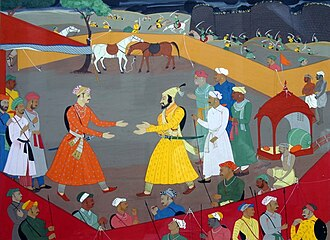
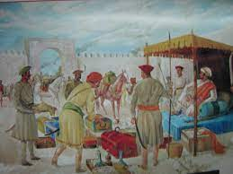
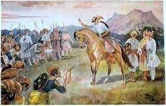
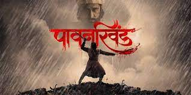
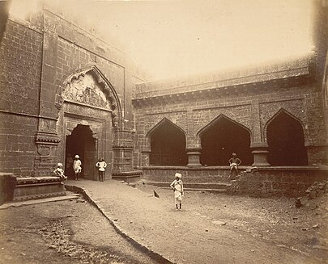
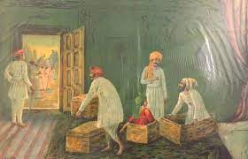
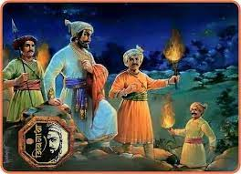
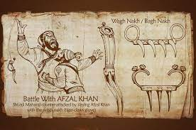
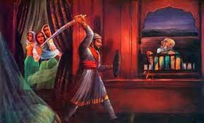
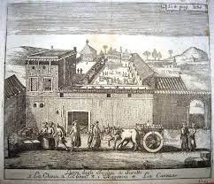

The attacks on Shaista Khan and Surat enraged Aurangzeb. In response, he sent the Rajput general Jai Singh I with an army numbering around 15,000 to defeat Shivaji.Throughout 1665, Jai Singh's forces pressed Shivaji, with their cavalry razing the countryside, and besieging Shivaji's forts. The Mughal commander succeeded in luring away several of Shivaji's key commanders, and many of his cavalrymen, into Mughal service. By mid-1665, with the fortress at Purandar besieged and near capture, Shivaji was forced to come to terms with Jai Singh.In the Treaty of Purandar, signed by Shivaji and Jai Singh on 11 June 1665, Shivaji agreed to give up 23 of his forts, keeping 12 for himself, and pay compensation of 400,000 gold hun to the Mughals.Shaista Khan and Muazzam were both replaced by Jai Singh after their failure against Shivaji. Jai Singh was given full military power and made viceroy of Deccan by the Mughal Emperor.
Jai Singh started his campaign by isolating Shivaji; he persuaded some Maratha nobles to join him and offered to reduce the tribute of the Bijapur Sultanate if they joined him. Jai Singh then besieged Purandar and beat off all Maratha attempts to relieve the fort. In 1665, Shivaji sued for peace and agreed to hand over 23 of his 36 forts to Jai Singh.A mansab of 5000 was granted to shivaji's son, Sambhaji. Shivaji refused to personally serve Aurangzeb, but agreed to send his son Sambhaji. Shivaji also agreed to help the Mughals against Bijapur. Shivaji, along with his son Sambhaji, were taken at Agra in 1666
Pavan Khind



Shivaji Maharaj continued to push into the Bijapur territory, after defeating Afzal Khan and the rout of the Bijapur army at Pratapgad. Within a few days, the Marathas captured Panhala fort (near the city of Kolhapur). Meanwhile, another Maratha force, led by Netaji Palkar, pushed towards Bijapur. Bijapur forces repulsed this attack, forcing Shivaji, some of his commanders and soldiers to retreat to Panhala fort.The Bijapur troops was led by Siddhi Johar, an Abyssinian general. Discovering Shivaji's location, Johar laid siege to Panhala. Netaji Palkar made repeated attempts to break the Bijapur force siege from outside, but these failed.
A risky plan was then put into action: Shivaji, Baji Prabhu Deshpande with a select band of troops would attempt to break through the siege at the night, and make for Vishalgad. In order to deceive the Bijapur forces, to avoid a chase if they found out that Shivaji had broken the siege, Shiva Kashid a barber by profession, had physical resemblance to Shivaji, volunteered to dress like the king and let himself be captured. On a stormy full moon night (night of Guru Purnima) 600 men led by Baji Prabhu and Shivaji, broke through the siege. They were pursued by the Bijapur force. As planned, Shiva Kashid allowed himself to be captured and taken back to the Bijapur camp, guessing that he would be put to death once the charade was discovered. This gave the fleeing Maratha force some breathing space.As soon as the Bijapur force realized their mistake, the chase was on again, led by Siddhi Masood, the son-in-law of Siddhi Johar. Near the pass of Ghodkhind (Horse's Pass), the Marathas made a final stand. Shivaji and half of the Maratha force pushed for Vishalgadh, while Baji Prabhu, his brother Phulaji and the remaining Bandal Sena of a few hundred men blocked the pass and fought against 10000 Bijapur soldiers in the Ghodkhind Pass for more than 18 hours.Baji Prabhu used a weapon called "Dand Patta". Through the battle, Baji Prabhu, though grievously injured, continued fighting, inspiring his men to fight on until Shivaji's safe journey to Vishalgadh was signaled by the firing of three cannon volleys. It should be mentioned that when Shivaji approached Vishalgad with 300 men, the fort was already under siege by Bijapur sardars named Suryarao Surve and Jaswantrao Dalvi. Shivaji with his 300 men had to defeat Surve to reach the fort.The Ghod Khind pass was subsequently named Pavan Khind ("Holy Pass") by Shivaji, in honor of the sacrifice of Baji Prabhu and his troops.
Siege of Panhala



The Siege of Panhala was led by Siddi Jauhar on behalf of the Bijapur Sultanate, dispatched by Ali Adil Shah II to reclaim the Panhala Fort, was a momentous undertaking. Shivaji had seized Panhala on 28 November 1659, just 18 days after the death of Afzal Khan at Pratapgad. Despite the efforts of two of Bijapur Sultanate’s prominent commanders, Afzal Khan and Rustam Zaman, who had both failed in their attempts to capture Shivaji, victory eluded them. With Bijapur running short of options and facing the expanding influence of Shivaji, the responsibility of bringing this campaign to a conclusion fell on Siddi Jauhar. By taking on this pivotal role, Siddi Jauhar finally earned favor at the Bijapur court, leading to the restoration of the Kurnool district to him, and Shivaji had to surrender the Panhala fort.Sidi Jauhar's forces were constantly on edge, never knowing when Netaji Palkar and his cavalry would strike next. The siege of Panhala became a test of endurance for both sides, with Shivaji's men fighting bravely to defend their fortress. Despite the relentless attacks by Netaji Palkar, Sidi Jauhar remained determined to capture Panhala. He ordered his troops to launch a full-scale assault on the fort. Shivaji and his men fought valiantly, but they were outnumbered and outgunned. The Bijapur forces managed to breach the defenses and enter the fort. In the midst of the chaos, Shivaji made a strategic retreat, leaving Panhala in the hands of the enemy. It was a bitter blow to his forces, but he knew that the war was far from over. As Sidi Jauhar celebrated his victory, Shivaji was already planning his next move to reclaim what was rightfully his. The fall of Panhala was a setback for Shivaji, but it only fueled his determination to continue fighting for his people's freedom. The war with Bijapur was far from over, and Shivaji was ready to do whatever it took to ensure the safety and prosperity of his kingdom. The battle for Panhala was just one chapter in the long and complex history of Shivaji's struggle for independence.The siege initiated by Siddi Jauhar involved blocking all escape routes for Shivaji, prompting Netaji to conduct nightly attacks on Jauhar's army to safeguard Shivaji from harm. Eventually, Shivaji managed to escape from Panhala with his family and reach Vishalgad, but he was pursued by Fazl Khan, the son of Afzal Khan who had died in the Battle of Pratapgarh. Fazl Khan, fueled by anger and seeking revenge, began plundering and devastating Shivaji's possessions in the Konkan region. He successfully captured the Pavangad fort after a relentless campaign
Arrest in Agra and escape



In 1666, Aurangzeb summoned Shivaji to Agra (though some sources instead state Delhi), along with his nine-year-old son Sambhaji. Aurangzeb planned to send Shivaji to Kandahar, now in Afghanistan, to consolidate the Mughal empire's northwestern frontier. However, on 12 May 1666, Shivaji was made to stand at court alongside relatively low-ranking nobles, men he had already defeated in battle. Shivaji took offence, stormed out, and was promptly placed under house arrest. Ram Singh, son of Jai Singh, guaranteed custody of Shivaji and his son.Shivaji's position under house arrest was perilous, as Aurangzeb's court debated whether to kill him or continue to employ him. Jai Singh, having assured Shivaji of his personal safety, tried to influence Aurangzeb's decision. Meanwhile, Shivaji hatched a plan to free himself. He sent most of his men back home and asked Ram Singh to withdraw his guarantees to the emperor for the safe custody of himself and his son. He surrendered to Mughal forces.Shivaji then pretended to be ill and began sending out large baskets packed with sweets to be given to the Brahmins and poor as penance On 17 August 1666, by putting himself in one of the large baskets and his son Sambhaji in another, Shivaji escaped and left Agra
Combat with Afzal Khan



Shivaji had previously carefully guided his infantry and rangers, as we have seen before. The Jedhe Sequence records Shivaji's guidelines to the Bandal and Silimbkar contingents In a classified gathering that Shivaji held with his clergymen and Kanhoji Jedhe, it was concurred that the Muslim Afzal Khan is treacherous.The Bandal Deshmukh with his power will be in Jawali and in the woods of Standard. In the event that the Khan ought to act deceptively during the gathering, the Bandal Deshmukh shouldn't let the Khan's military set up camp in Standard rise the mountain fort, and support me Shivaji with select men. On the off chance that, by the endowments of goddess Shri Amba, Afzal Khan is killed, the Bandals will assault and completely obliterate the foe armed force in Standard subsequent to getting a sign from the post. Haibatrao and Balaji Naik Silimbkar are situated in the Bochegholi pass with their soldiers. They won't allow the foe to rise the pass. In this manner it was settled and organized in the mystery meeting.It shows up from this concentrate that Shivaji had allocated the errand of controlling the course between the spot of meeting and Afzal Khan's camp at Standard to the Bandals and their contingent. They were likewise told to go after the foe camp at Standard once they got the set up signal. Moreover, the errand of guarding the Bochegholi pass was given to the Silimbkars. In any case, no dependable data is surviving to tell us exactly where the other deshmukhs and their contingents or the regulars of Shivaji's power were positioned. Subtleties given in later date sources are temperamental.Shivaji and Afzal Khan met on 10th November 1659. It is notable that Shivaji killed Afzal Khan in course of this gathering. In any case, there is no arrangement in what different sources say about the event. What is sure, by the by, is that Shivaji killed Afzal Khan as he had recently settled.in the other, he seemed to be Master Vishnu manifest who bears a sword in one hand and a mace in the other.According to the Shivabharat neither names Afzal Khan's Brahmin worker who, it, went after Shivaji, nor does it give any data about what befell the man a while later. In any case, it shows up from different sources that the Brahmin was Krishnaji Bhaskar. A few duplicates of the A. K.Chronicle say Krishnaji Bhaskar pointed a blow at Shivaji yet missed and, since Krishnaji was a Brahmin, Shivaji saved him, letting him go away. In any case, one variant of the narrative says that despite the fact that Krishnaji Bhaskar struck at him, Shivaji didn't kill him since he was a Brahmin; that he was killed by Jiva Mahala.!2®8 There is practically nothing to pick between the unwavering quality of these later date accounts. Killing a Brahmin was to be sure viewed as a wrongdoing in those times and Shivaji was no exemption for that conviction In any case, it is hard to surrender that Shivaji saved Krishnaji Bhaskar in the melee on the grounds that he was a Brahmin. Maybe Krishnaji Bhaskar was not killed on account of Shivaji and a few creators, exploiting the reality most likely trying to add to their hero's fame, recorded that Shivaji didn't raise his sword against Krishnaji Bhaskar in light of the fact that he was a Brahmin. Just a single duplicate of the A.K Narrative expresses that Krishnaji Bhaskar got away alive from the fracas. Considering this and from the quietness kept up with by the Shivabharat about Krishnaji Bhaskar's destiny, apparently he was killed. Understanding that Afzal Khan had been chopped down, his ten protectors - Abdul Sayyid, Bada Sayyid, Afzal Khan's nephew Rahim Khan, Pahlawan Khan, four other Muslims,and Pilaji and Shankaraji Mohite charged towards Shivaji to kill him. Shivaji protected himself with his blade and patta. In a matter of moments by any stretch of the imagination, Shivaji's ten protectors — Sambhaji Kawji, Kataji Ingale, Kondaji Kank, Yesaji Kank, Krishnaji Gayakwad, Suryaji Kakade, Jiva Mahala, Visaji Murumbak, Sambhaji Karwar, and Siddi Ibrahim likewise hurried forward. Jiva Mahala cut down Bada Sayyid before he could strike at Shivaji. The others immediately killed the rest of the Khan's gatekeepers Sabhasad writes The Shivaji himself killed in single battle the Khan who was essentially a genuine Duryodhan; as much in strength of body as in evil of heart. Bhima killed him independent.Comparatively did the Raja. Shivaji was Bhima himself. It was he who killed Afzal. This deed was not that of a person. A manifestation he definitely was, thus without a doubt might he at some point play out this deed. Achievement was accomplished."Shivaji, intending to capture as much of the Adilshahi province as possible, reached Wai with a large force without any loss of time.
Attacks on Shaista Khan and Surat



A 20th century depiction of Shivaji's surprise attack on Mughal general Shaista Khan in Pune .
At the request of Badi Begum of Bijapur, Aurangzeb, now the Mughal emperor, sent his maternal uncle Shaista Khan, with an army numbering over 150,000, along with a powerful artillery division, in January 1660 to attack Shivaji in conjunction with Bijapur's army led by Siddi Jauhar. Shaista Khan, with his better equipped and well provisioned army of 80,000 seized Pune. He also took the nearby fort of Chakan, besieging it for a month and a half before breaching the walls.He established his residence at Shivaji's palace of Lal Mahal.
On the night of 5 April 1663, Shivaji led a daring night attack on Shaista Khan's.Battle of Surat, also known as the Sack of Surat, was a land battle that took place on 5 January 1664, near the city of Surat, in present-day Gujarat, India, between Shivaji, leader of the fledgling Maratha State and Inayat Khan, a Mughal commander. The Marathas defeated the Mughal military unit posted at Surat and ransacked the city.
Surat was a wealthy port city used by the Moghals for maritime trade in the Arabian Sea. The city was populated mostly by Hindus, but there were Muslims & others as well; including the officials of the Moghal administration at the city. According to historian James Grant Duff, Surat was attacked by Shivaji on 5 January 1664; the attack was so sudden that the population had no chance to flee, the violent plunder of the Mahratta forces continued for six days & two-thirds of the city was burnt down. The loot was then transferred to Rajgad fort hidden in the Western Ghauts near Poona (Pune).
Shaista Khan, the Moghal nawab, was in the Deccan for more than three years fighting the Marathas, and their financial condition was dire. So to improve his finances, Shivaji planned to attack Surat, a key Moghal administrative centre and a wealthy port town that generated a million rupees in taxes. His aim was to capture and loot the wealthy port city and bring all the loot to his Raigad Fort.In the rainy season of 1663, he focused on targeting Surat, Shivaji's spies and agents meticulously observed the northern Mughal territories between Poona and Burhanpur, seeking out the weakest point for a new assault as open war between them had commenced. With accurate intelligence in hand, Shivaji planned to strike Surat, intending to tarnish the Emperor's reputation by raising a significant disturbance.While Surat had a castle on the river Tapti, the city as a whole had poor defenses. Movement and clash of forcesDespite the distance of over two hundred miles and the lack of good roads, Shivaji was undeterred. He strategically positioned military camps in the vicinity of Danda Rajpuri, Pen, and Nasik, with troops totaling about four thousand. Under the guise of suppressing the Siddi and the Portuguese, these troops mobilized from their stations towards Surat in early January 1664. Shivaji himself departed from Nasik and led his forces through a circuitous route, uniting all detachments near Gandevi, about 28 miles south of Surat.